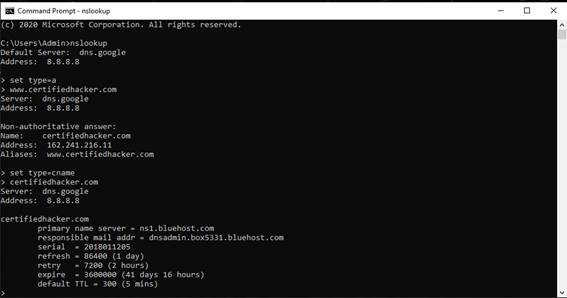
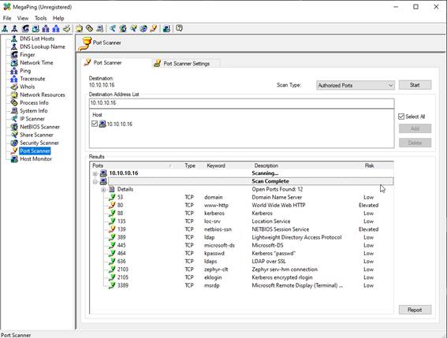
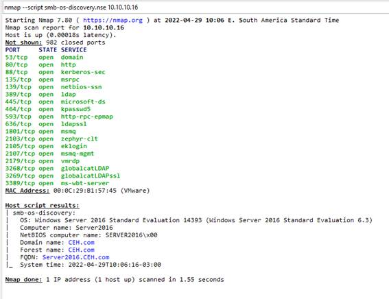
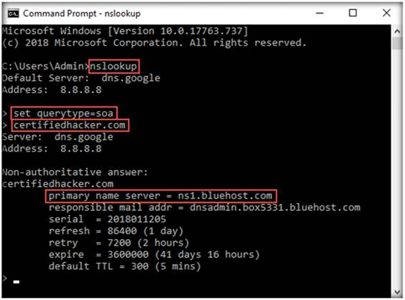

Reconhecimento
Footprinting através de mecanismos de busca
Google Search
Site:
Inurl:
Filetypes:
Info:
Search Video e Imagem
https://citizenevidence.amnestyusa.org/
FTP Search
Footprinting através de Serviços Web
Informação de domínio e subdomínio
Informação Pessoal
Navegação anônima
Instalação do TorBrowser e navegação anônima
Determinar o sistema operacional alvo de forma passiva
https://censys.io/domain?q=eccouncil.org
Exibe informações sobre o hosts, OS, protocolos
e portas
Footprinting através de engenharia social
theHarvester
theHarvester -d 77diamonds -l 200
-b linkedin
Sherlock
python3 sherlock.py satya nadella
Followerwonk
https://followerwonk.com/analyze/RicardoHReis
Footprinting de site web
Fazer ping do endereço www.certifiedhacker.com
ping www.certifiedhacker.com -f -l 1500
ping www.certifiedhacker.com -f -l 1300
Tentar outros tamanhos de pacote até achar o tamanho máximo aceitavel
ping www.certifiedhacker.com -f -l 1472
ping www.certifiedhacker.com -i 23 -n 1
ping www.certifiedhacker.com -i 13 -n 1
Gather Information about a Target
Website using Website Informer
Busca informações sobre o website
Web Data Extractor
Extrair informações do website usando a ferramenta Web Data Extractor
Mirror a Target Website using HTTrack
Web Site Copier
Gather a Wordlist from the Target
Website using CeWL
cewl -w wordlist.txt -d 2 -m 5 www.certifiedhacker.com
-d profundidade da pesquisa
-m tamanho mínimo da palavra
-w arquivo de saída da lista de palavras
Perform Email
Footprinting
Gather Information about a Target by
Tracing Emails using eMailTrackerPro
Perform Whois Lookup using
DomainTools
https://whois.domaintools.com/certifiedhacker.com
Gather DNS Information using nslookup
Command Line Utility and Online Tool
Nslookup

http://www.kloth.net/services/nslookup.php
Perform Reverse DNS Lookup using
Reverse IP Domain Check and DNSRecon
Rever IP Domain Checker
https://www.yougetsignal.com/tools/web-sites-on-web-server/
Search for www.certifiedhacker.com
DNSRECON
dnsrecon -d www.certifiedhacker.com -r
162.241.216.0-162.241.216.255
Perform
Network Footprinting
ARIN Whois database
https://www.arin.net/about/welcome/region
Consulta é feita pelo IP exemplo CertifiedHacker.com 162.241.216.11
Net Range
162.240.0.0 - 162.241.255.255
CIDR
162.240.0.0/15
Perform Network Tracerouting in
Windows and Linux Machines
tracert www.certifiedhacker.com
tracert -h 5 www.certifiedhacker.com
Irá fazer o trace da rota até 5 saltos
Fazer rastreio da rota pelo Linux
traceroute www.certifiedhacker.com
Perform Advanced Network Route
Tracing Using Path Analyzer Pro on Windows
Perform
Footprinting using Various Footprinting Tools
Footprinting a Target using Recon-ng
Recon-ng
Instalar todos os modulos atraves
do comando
marketplace install all
Consultar os modulos
modules search
Digitar o comando workspaces para visualizar a
lista de parâmetros
workspaces
Criar um workspace
workspaces create CEH
Carregar um workspaces
workspaces load CEH
Inserir um domínio no banco de dados
db insert domains
certifiedhacker.com
Exibir os dominios
show domains
Carregar módulos para usar contra o domínio
Lista os módulos com o nome brute
modules load brute
Carrega o módulo específico
modules load recon/domains-hosts/brute_hosts
Execute o módulo carregado
run
Para voltar e carregar outro módulo
back
Carregar módulo do bing para resolver os hosts
modules load recon/hosts-hosts/reverse_resolve
Carregar módulo para reverse lookup para cada
IP
modules load recon/hosts-hosts/reverse_resolve
Exibir os hosts
show hosts
Preparar um relatório
modules load
reporting/html
options set FILENAME /root/Desktop/results.html
options set CREATOR Ricardo
options set CUSTOMER Certifiedhacker Networks
recon-ng
workspaces create reconnaissance
modules load recon/domains-contacts/whois_pocs
info
options set SOURCE facebook.com
run
back
modules load recon/profiles-profiles/namechk
options set SOURCE MarkZuckerberg
run
back
modules load recon/profiles-profiles/profiler
options set SOURCE MarkZuckerberg
run
Footprinting a Target using Maltego
Footprinting a Target using
OSRFramework
Footprinting a Target using FOCA
Footprinting a Target using
BillCipher
Scanning
Networks
Overview of Host Discovery
Perform Host Discovery using Nmap
ARP ping scan
nmap -sn -PR 10.10.10.16
-sn: disables port scan and -PR:
performs ARP ping scan.
Note: The ARP ping scan probes ARP
request to target host; an ARP response means that the host is active.
UDP ping scan
nmap -sn -PU 10.10.10.16
-PU: performs the UDP ping scan.
Note: The UDP ping scan sends UDP
packets to the target host; a UDP response means that the host is active. If
the target host is offline or unreachable, various error messages such as
host/network unreachable or
TTL exceeded could be returned.
ICMP ECHO ping scan
nmap -sn -PE 10.10.10.16
-PE: performs the ICMP ECHO ping
scan
Note: The ICMP ECHO ping scan involves
sending ICMP ECHO requests to a host. If the target host is alive, it will
return an ICMP ECHO reply. This scan is useful for locating active devices or
determining if the ICMP is passing through a firewall.
ICMP ECHO ping sweep range of target
IP address.
nmap -sn -PE 10.10.10.03-20
Note: The ICMP ECHO ping sweep is used
to determine the live hosts from a range of IP addresses by sending ICMP ECHO
requests to multiple hosts. If a host is alive, it will return an ICMP ECHO
reply.
ICMP Timestamp and Address Mask
Ping Scan: These techniques are alternatives for the traditional ICMP ECHO ping
scan, which are used to determine whether the target host is live specifically
when administrators block the ICMP ECHO pings
ICMP timestamp ping scan
nmap -sn -PP 10.10.10.16
ICMP address mask ping scan
nmap -sn -PM 10.10.10.16
TCP SYN Ping Scan
nmap -sn -PS 10.10.10.16
This technique sends empty TCP
SYN packets to the target host, ACK response means that the host is active.
TCP ACK Ping Scan
nmap -sn -PA 10.10.10.16
This technique sends empty TCP
ACK packets to the target host; an RST response means that the host is active.
IP Protocol Ping Scan
nmap -sn -PO 10.10.10.16
This technique sends different
probe packets of different IP protocols to the target host, any response from
any probe indicates that a host is active
Perform Host Discovery using Angry IP
Scanner
Perform Port
and Service Discovery
Perform Port and Service Discovery
using MegaPing

Perform Port and Service Discovery
using NetScanTools Pro
Explore Various Network Scanning
Techniques using Nmap
Scanning Ports using TCP Full Open
Note: TCP connect scan completes a
three-way handshake with the target machine. In the TCP three-way handshake,
the client sends a SYN packet, which the recipient acknowledges with the
SYN+ACK packet. In turn, the client acknowledges the SYN+ACK packet with an ACK
packet to complete the connection. Once the handshake is completed, the client
sends an RST packet to end the connection.
nmap -sT -v 10.10.10.16
Note: -sT: performs the TCP
connect/full open scan and -v: enables the verbose output (include all hosts
and ports in the output).
Scanning Ports using TCP Half Open
nmap -sS -v 10.10.10.16
Note: -sS: performs the stealth
scan/TCP half-open scan and -v: enables the verbose output (include all hosts
and ports in the output).
Note: The stealth scan involves
resetting the TCP connection between the client and server abruptly before
completion of three-way handshake signals, and hence leaving the connection
half-open. This scanning technique can be used to bypass firewall rules,
logging mechanisms, and hide under network traffic.
Scanning Ports using Xmas scan
nmap -sX -v 10.10.10.16
Note: -sX: performs the Xmas scan and
-v: enables the verbose output (include all hosts and ports in the output).
Note: Xmas scan sends a TCP frame to
a target system with FIN, URG, and PUSH flags set. If the target has opened the
port, then you will receive no response from the target system. If the target
has closed the port, then you will receive a target system reply with an RST
Scanning Ports using TCP Maimon scan
nmap -sX -v 10.10.10.16
Note: -sM: performs the TCP Maimon
scan and -v: enables the verbose output (include all hosts and ports in the
output).
Note: In the TCP Maimon scan, a
FIN/ACK probe is sent to the target; if there is no response, then the port is
Open|Filtered, but if the RST packet is sent as a response, then the port is
closed
Scanning Ports using ACK flag probe
nmap -sA -v 10.10.10.16
Note: -sA: performs the ACK flag
probe scan and -v: enables the verbose output (include all hosts and ports in the
output).
Note: The ACK flag probe scan sends
an ACK probe packet with a random sequence number; no response implies that the
port is filtered (stateful firewall is present), and an RST response means that
the port is not filtered
Scanning Ports using UDP scan
nmap -sU -v 10.10.10.16
Note: -sU: performs the UDP scan and
-v: enables the verbose output (include all hosts and ports in the output)
Note: The UDP scan uses UDP protocol
instead of the TCP. There is no three-way handshake for the UDP scan. It sends
UDP packets to the target host; no response means that the port is open. If the
port is closed, an ICMP port unreachable message is received.
Scanning Ports using NULL scan
nmap -sN -T4 -A -v 10.10.10.9
Note: Using this configuration, you
are setting Nmap to perform a null scan with the time template as -T4 and all
aggressive options enabled
Scanning Ports using IDLE/IPID Header
Scan
nmap -sI -v 10.10.10.16
Note: A TCP port scan method that can
be used to send a spoofed source address to a computer to discover what
services are available.
Scanning Ports using SCTP INIT Scan
nmap -sY -v 10.10.10.16
Note: An INIT chunk is sent to the
target host; an INIT+ACK chunk response implies that the port is open, and an
ABORT Chunk response means that the port is closed.
Scanning Ports using SCTP COOKIE ECHO
Scan
nmap -sZ -v 10.10.10.16
Note: A COOKIE ECHO chunk is sent to
the target host; no response implies that the port is open and ABORT Chunk
response means that the port is closed.
Scanning Ports detects service
versions
nmap -sV 10.10.10.16
Note: -sV: detects service versions
Note: Service version detection helps
you to obtain information about the running services and their versions on a
target system. Obtaining an accurate service version number allows you to
determine which exploits the target system is vulnerable to
Scanning Ports scan a whole subnet or
IP range
nmap -A 10.10.10.*
Note: -A: enables aggressive scan.
The aggressive scan option supports OS detection (-O), version scanning (-sV),
script scanning (-sC), and traceroute (--traceroute). You should not use -A against
target networks without permission
Explore
Various Network Scanning Techniques using Hping3
Hping3 using ACK ping
hping3 -A 10.10.10.16 -p 80 -c 5
Note: In this command, -A specifies
setting the ACK flag, -p specifies the port to be scanned (here, 80), and -c
specifies the packet count (here, 5).
Note: The ACK scan sends an ACK probe
packet to the target host; no response means that the port is filtered. If an
RST response returns, this means that the port is closed.
Hping3 using SYNC ping
hping3 -8 0-100 -S 10.10.10.16 -V
Note: In this command, -8 specifies a
scan mode, -p specifies the range of ports to be scanned (here, 0-100), and -V
specifies the verbose mode
Note: The SYN scan principally deals
with three of the flags: SYN, ACK, and RST. You can use these three flags for
gathering illegal information from servers during the enumeration process
Hping3 using FIN PUSH URG ping
hping3 -F -P -U 10.10.10.16 -p 80 -c 5
Note: In this command, -F specifies
setting the FIN flag, -P specifies setting the PUSH flag, -U specifies setting
the URG flag, -c specifies the packet count (here, 5), and -p specifies the
port to be scanned (here, 80)
Note: FIN, PUSH, and URG scan the
port on the target IP address. If a port is open on the target, you will not
receive a response. If the port is closed, Hping will return an RST response
Hping3 displaying the open ports and
names of the services
hping3 --scan 0-100 -S 10.10.10.16
Note: In this command, --scan
specifies the port range to scan, 0-100 specifies the range of ports to be
scanned, and -S specifies setting the SYN flag.
Note: In the TCP stealth scan, the
TCP packets are sent to the target host; if a SYN+ACK response is received, it
indicates that the ports are open
Hping3 ICMP scan
hping3 -1 10.10.10.16 -p 80 -c 5
Hping3 subnet scan
hping3 -1 10.10.10.0 --rand-dest -I eth0
Perform OS
Discovery
Overview of OS Discovery/Banner
Grabbing
Identify the Target Systems OS with
Time-to-Live (TTL) and TCP Window Sizes using Wireshark
Ping Windows Server 10.10.10.16
Ping Ubuntu Linux 10.10.10.9
Perform OS Discovery using Nmap
Script Engine (NSE)
NMAP aggressive scan
nmap -A 10.10.10.16
Note: -A: to perform an aggressive
scan.
NMAP aggressive scan
nmap -O 10.10.10.16
Note: -O: performs the OS discovery
NMAP running script to discover
OS
nmap --script smb-os-discovery.nse 10.10.10.16
Note: --script: specifies the
customized script and smb-os-discovery.nse: attempts to determine the OS,
computer name, domain, workgroup, and current time over the SMB protocol (ports
445 or 139).

Perform OS Discovery using
Unicornscan
Grabbing OS information
unicornscan 10.10.10.16 -Iv
unicornscan 10.10.10.9 -Iv
Note: In this command, -I specifies
an immediate mode and v specifies a verbose mode
Scan beyond
IDS and Firewall
NMAP Packet fragmentation scanning
nmap -f 10.10.10.10
Note: -f switch is used to split the
IP packet into tiny fragment packets.
Note: Packet fragmentation refers to
the splitting of a probe packet into several smaller packets (fragments) while
sending it to a network. When these packets reach a host, IDSs and firewalls
behind the host generally queue all of them and process them one by one.
However, since this method of processing involves greater CPU consumption as
well as network resources, the configuration of most of IDSs makes it skip
fragmented packets during port scans.
NMAP source port manipulation
scanning
nmap -g 80 10.10.10.10
Note: In this command, you can use
the -g or --source-port option to perform source port manipulation.
Note: Source port manipulation refers
to manipulating actual port numbers with common port numbers to evade
IDS/firewall: this is useful when the firewall is configured to allow packets
from well-known ports like HTTP, DNS, FTP, etc
NMAP MTU scanning
nmap -mtu 8 10.10.10.10
Note: In this command, -mtu:
specifies the number of Maximum Transmission Unit (MTU) (here, 8 bytes of
packets).
Note: Using MTU, smaller packets are
transmitted instead of sending one complete packet at a time. This technique
evades the filtering and detection mechanism enabled in the target machine
NMAP Decoy random IP address scanning
nmap -D -RND:10 10.10.10.10
Note: In this command, -D: performs a
decoy scan and RND: generates a random and non-reserved IP addresses.
Note: The IP address decoy technique
refers to generating or manually specifying IP addresses of the decoys to evade
IDS/firewall. This technique makes it difficult for the IDS/firewall to
determine which IP address was actually scanning the network and which IP
addresses were decoys.
By using this command, Nmap
automatically generates a random number of decoys for the scan and randomly
positions the real IP address between the decoy IP addresses.
Create Custom Packets using Nmap to
Scan beyond IDS/Firewall
Send the binary data
nmap 10.10.10.16 --data 0xdeadbeef
Note: Nmap uses --data <hex
string> (here, 0xdeadbeef) to send the binary data (os and 1s) as payloads
in the sent packets to scan beyond firewalls
Send a regular string
nmap 10.10.10.16 --data-string "Ph34r my
l33t skills"
Note: Nmap uses --data-string
<string> (here, Ph34r my l33t skills) to send a regular string as
payloads in the sent packets to the target machine for scanning beyond the
firewall.
Send number of random data bytes
nmap 10.10.10.16 --data-length 5
Note: Nmap uses --data-length
<len> (here, 5) to append the number of random data bytes to most of the
packets sent without any protocol-specific payloads.
Send randomize hosts
nmap --randomize-hosts 10.10.10.16
Note: Nmap uses --randomize-hosts to
scan the number of hosts in the target network in random order to scan the
intended target that is beyond the firewall
Send the packets with bad or bogus
TCP/UPD checksums
nmap --badsum 10.10.10.16
Note: Nmap uses --badsum to send the
packets with bad or bogus TCP/UPD checksums to the intended target to avoid
certain firewall rulesets
Browse Anonymously using Proxy
Switcher
Browse Anonymously using CyberGhost
VPN
Draw Network
Diagrams
SolarWinds Network Topology Mapper
Perform
Network Scanning using Various Scanning Tools
Scan a Target Network using
Metasploit
Open Metasploit
msfconsole
Scanning with Nmap
nmap -Pn -sS -A -oX Test 10.10.10.0/24
Import the Nmap results from the
database
db_import Test
View the list of active hosts
hosts
List of the services running on
the active hosts
db_services
Search for the Metasploit port
scanning modules
search portscan
Usar o
auxiliary/scanner/portscan/syn
Configurar os parâmetros
Escanear as portas TCP do host 10.10.10.16
Voltar para o modulo MSF
back
Escolher o auxiliar de scan de portas TCP
use auxiliary/scanner/portscan/tcp
Configurar o host 10.10.10.16
set RHOSTS 10.10.10.16
Executar
run
Use the module
scanner/smb/version to determine which version of Windows is running on a
target and which Samba version is on a Linux host
use auxiliary/scanner/smb/smb_version
Scan FTP version
use auxiliary/scanner/ftp/ftp_version
Export this information to a CSV
file.
hosts -o
/root/Desktop/Metasploit_Scan_Results.csv
Enumeration
Perform NetBIOS Enumeration
Perform NetBIOS Enumeration using
Windows Command-Line Utilities
Here, we will use the Nbtstat,
and Net use Windows command-line utilities to perform NetBIOS enumeration on
the target network
No Windows usar o comando nbtstat para listar
a tabela de nomes dos computadores remoto
nbtstat
-a 10.10.10.10
Listar o conteúdo do cache de nome NetBIOS
nbtstat
-c
Exibir o status de conexão, compartilhamento de pastas com o alvo.
net use
Perform NetBIOS Enumeration using
NetBIOS Enumerator
Here, we will use the NetBIOS
Enumerator to perform NetBIOS enumeration on the target network.
Perform NetBIOS Enumeration using
an NSE Script
Here, we will run the nbstat
script to enumerate information such as the name of the computer and the
logged-in user.
nmap -sV -v --script nbstat.nse 10.10.10.16
Note: -sV detects the service
versions, -v enables the verbose output (that is, includes all hosts and ports
in the output), and --script nbtstat.nse performs the NetBIOS enumeration.
nmap -sU -p 137 --script nbstat.nse
10.10.10.16
Note: -sU performs a UDP scan, -p
specifies the port to be scanned, and --script nbtstat.nse performs the NetBIOS
enumeration
Perform SNMP Enumeration
Perform SNMP Enumeration using
snmp-check
Here, we will use the snmp-check
tool to perform SNMP enumeration on the target IP address
Note: Before starting SNMP
enumeration, we must first discover whether the SNMP port is open. SNMP uses
port 161 by default; to check whether this port is opened, we will first run
Nmap port scan.
nmap -sU -p 161 10.10.10.16
Note: -sU performs a UDP scan and -p
specifies the port to be scanned.
Usar a ferramenta snmp-check para obter as
informações sobre o alvo
snmp-check 10.10.10.16
Perform SNMP Enumeration using
SoftPerfect Network Scanner
Here, we will use the SoftPerfect
Network Scanner to perform SNMP enumeration on a target system
Perform LDAP Enumeration
Perform LDAP Enumeration using
Active Directory Explorer (AD Explorer)
Here, we will use the AD Explorer
to perform LDAP enumeration on an AD domain and modify the domain user
accounts.
Perform NFS Enumeration
Perform NFS Enumeration using
RPCScan and SuperEnum
Here, we will use RPCScan and
SuperEnum to enumerate NFS services running on the target machine.
Verificar se o serviço NSF está ativo no alvo
nmap -p
2049 10.10.10.19
Baixar a ferramenta SuperEnum
git clone https://github.com/p4pentest/SuperEnum
Entrar no diretório da ferramenta
cd SuperEnum
Executar a consulta
echo
"10.10.10.19" >> Target.txt
Executar a enumeração
./superenum
Target.txt
Executar a enumeração com a ferramenta RPCScan
Baixar a ferramenta RPCScan
git
clone https://github.com/hegusung/RPCScan
Entrar no diretório da ferramenta
cd RPCScan
Executar a ferramenta
python3 rpc-scan.py 10.10.10.19
--rpc
Note: --rpc: lists the RPC
(portmapper); the target IP address may differ in your lab environment
Perform DNS Enumeration
Perform DNS Enumeration using
Zone Transfer
Here, we will perform DNS
enumeration through zone transfer by using the dig (Linux-based systems) and
nslookup (Windows-based systems) tool.
Consultar o DNS para recuperar informações sobre o host alvo
dig ns www.certifiedhacker.com
Note: In this command, ns returns
name servers in the result
Tentar fazer a transferência de Zona
dig @ns1.bluehost.com www.certifiedhacker.com axfr
Fazer a enumeração de DNS no Windows usando da ferramenta nslookup
No console digitar nslookup
nslookup
Entrar com os parâmetros
set querytype=soa
certifiedhacker.com

Entrar com o parâmetro
ls -d
ns1.bluehost.com
Perform DNS Enumeration using
DNSSEC Zone Walking
Here, we will use the DNSRecon
tool to perform DNS enumeration through DNSSEC zone walking
dnsrecon -h
dnsrecon -d www.certifiedhacker.com -z
Note: In this command, -d specifies
the target domain and -z specifies that the DNSSEC zone walk be performed with
standard enumeration.

Perform RPC and SMB Enumeration
using NetScanTools Pro
Here, we will use the
NetScanTools Pro tool to perform RPC and SMB enumeration.
Usar a ferramenta NetScanTools Pro Demo para enumerar os
serviços RPC e SMB
Perform RPC, SMB, and FTP
Enumeration using Nmap
Here, we will use Nmap to carry
out RPC, SMB, and FTP enumeration.
Configurar uma pasta FTP no Windows 19
No Linux executar o scan na porta 21
nmap -p 21 10.10.10.19
nmap -T4 -A 21 10.10.10.19
Note: In this command, -T4 specifies
the timing template (the number can be 0-5) and -A specifies that the ACK flag
is set
nmap -p 445 -A 10.10.10.19
Note: In this command, -p specifies
the port to be scanned, and -A specifies that the ACK flag is set.
nmap -p 21 -A 10.10.10.19
Note: In this command, -p specifies
the port to be scanned and -A specifies that the ACK flag is set
Enumerate Information using Global
Network Inventory
Enumerate Network Resources using
Advanced IP Scanner
Enumerate Information from Windows
and Samba Hosts using Enum4linux
enum4linux -h
enum4linux -u martin
-p apple -n 10.10.10.16
Note: In this command, -u user
specifies the username to use and -p pass specifies the password
Obtain the User list
enum4linux -u martin -p apple -U 10.10.10.16
Enum4linux starts enumerating and
displays data such as Target Information, Workgroup/Domain, domain SID
(security identifier), and the list of users, along with their respective RIDs
(relative identifier), as shown in the screenshots below.
Obtain the OS information of the
target
enum4linux -u martin -p apple
-o 10.10.10.16
Enumerate the password policy
information of our target machine.
enum4linux -u martin -p apple
-P 10.10.10.16
Enumerate the target machines
group policy information
enum4linux -u martin -p apple -G 10.10.10.16
Enumerate the share policy
information of our target machine
enum4linux -u martin -p apple
-S 10.10.10.16
Vulnerability Analysis - Module 05
A avaliação de vulnerabilidade é um exame da capacidade de um sistema ou
aplicativo, incluindo procedimentos e controles de segurança atuais, de
resistir a um ataque.
A pesquisa de vulnerabilidades é o processo de descoberta de
vulnerabilidades e falhas de design que deixam um sistema operacional e seus
aplicativos abertos a ataques ou uso indevido.
Overview of Vulnerabilities in Vulnerability
Scoring Systems and Databases
Perform Vulnerability Research in
Common Weakness Enumeration (CWE)
https://cwe.mitre.org/data/definitions/1337.html
Perform Vulnerability Research in
Common Vulnerabilities and Exposures (CVE)
Perform Vulnerability Research in
National Vulnerability Database (NVD)
https://nvd.nist.gov/vuln/detail/CVE-2019-2981
Perform Vulnerability Assessment
using Various Vulnerability Assessment Tools
Perform Vulnerability Analysis
using OpenVAS
Perform Web Servers and
Applications Vulnerability Scanning using CGI Scanner Nikto
nikto -H
Note: A tuning scan can be used to
decrease the number of tests performed against a target. By specifying the type
of test to include or exclude, faster and focused testing can be completed.
This is useful in situations where the presence of certain file types such as
XSS or simply interesting files is undesired.
Figure
nikto -h www.certifiedhacker.com -Tuning x
Note: -Cgidirs: scans the specified
CGI directories; users can use filters such as none or all to scan all CGI
directories or none).
System Hacking
Lab 4
Limpeza de logs
Limpar histórico de comando do Linux
shred ~/.bash_history && cat /dev/null >
.bash_history && history -c && exit